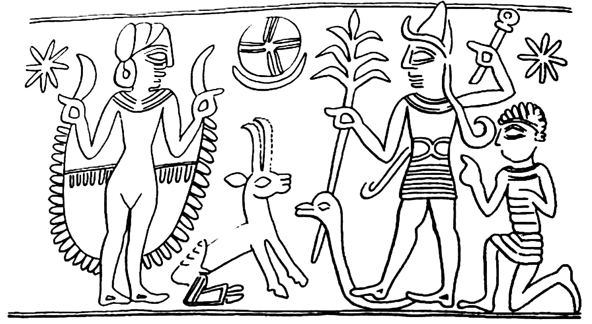
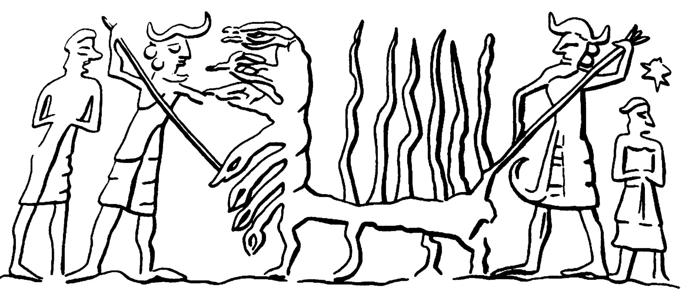

14 E Deus disse: " Haja luzeiros na extensão dos céus para separar o dia da noite, e que eles sejam para sinais e para festivais e para dias e anos; 15 e que eles sejam para luzeiros na cúpula dos céus para dar luz sobre o terreno”; e assim foi. 16 E Deus fez os dois grandes luzeiros, o grande luzeiro para governar o dia, e o pequeno luzeiro para governar a noite; e também as estrelas. 17 E Deus os colocou na cúpula dos céus para dar luz sobre o terreno, 18 e para governar o dia e a noite, e para separar a luz das trevas; e Deus viu que era bom. 19 E houve tarde e houve manhã, quarto dia.14 And God said, " Let there be lights in the expanse of the skies to separate the day from the night , and let them be for signs and for festivals and for days and years; 15 and let them be for lights in the dome of the skies to give light on the land”; and it was so. 16 And God made the two great lights , the great light to rule the day , and the small light to rule the night ; and also the stars. 17 And God placed them in the dome of the skies to give light on the land, 18 and to rule the day and the night , and to separate the light from the darkness ; and God saw that it was good . 19 And there was evening and there was morning, a fourth day .
20 E Deus disse: “Que as águas fervilhem com enxames de criaturas viventes, e que as aves voem acima do terreno contra a face da cúpula dos céus.”20 And God said, “Let the waters swarm with swarms of living creatures, and let birds fly above the land against the face of the dome of the skies ."
21 E Deus criou os grandes monstros do mar e toda criatura vivente que se move, com a qual as águas fervilharam segundo a sua espécie, e toda ave de asas segundo a sua espécie; e Deus viu que era bom.21 And God created the great sea monsters and every living creature that moves, with which the waters swarmed after their kind, and every bird of wing after its kind; and God saw that it was good .
22 E Deus os abençoou, dizendo: “Sejam frutíferos e multipliquem-se, e encham as águas nos mares, e que as aves se multipliquem sobre o terreno.” 23 E houve tarde e houve manhã, quinto dia. 24 E Deus disse: “Que o terreno traga criaturas viventes segundo a sua espécie, gado e coisas rastejantes e feras do terreno segundo a sua espécie”; e assim foi. 25 E Deus fez as feras do terreno segundo a sua espécie, e o gado segundo a sua espécie, e os rastejantes do chão segundo a sua espécie; e Deus viu que era bom. 26 E Deus disse: "Façamos o humano22 And God blessed them, saying, “Be fruitful and multiply, and fill the waters in the seas, and let birds multiply on the land.” 23 And there was evening and there was morning, a fifth day . 24 And God said, “ Let the land bring out living creatures according to their kind, cattle and creeping things and beasts of the land according to their kind”; and it was so. 25 And God made the beasts of the land according to their kind, and the cattle according to their kind, and the creepers of the ground according to its kind; and God saw that it was good. 26 And God said, "Let us make human
Gênesis 1-2:3. Tradução e Design Literário por Tim Mackie para BibleProject Classroom: Heaven and Earth (2020).Genesis 1-2:3. Translation and Literary Design by Tim Mackie for BibleProject Classroom: Heaven and Earth (2020).
à nossa imagem, segundo a nossa semelhança; e que eles governem sobre os peixes do mar e sobre as aves do céu e sobre o gado e sobre todo o terreno e sobre todo rastejante que rasteja sobre o terreno." 27 E Deus criou o humano à sua imagem, à imagem de Deus ele o criou; macho e fêmea ele os criou. 28 E Deus os abençoou: "Sejam frutíferos e multipliquem-se, e encham o terreno, e subjuguem-no; e governem sobre os peixes do mar e sobre as aves do céu e sobre toda criatura vivente que rasteja sobre o terreno." 29 E Deus disse: “Eis que dei a vocês toda planta que produz semente que está na superfície de toda a terra, e toda árvore que tem fruto produzindo semente; isso será alimento para vocês; 30 e a toda fera do terreno e a toda ave do céu e a toda coisa que se move sobre o terreno que tem vida animal nela, toda planta verde para alimento”; e assim foi. 31 E Deus viu tudo o que havia feito, e eis que era muito bom. E houve tarde e houve manhã, sexto dia.in our image, according to our likeness; and let them rule over the fish of the sea and over the birds of the sky and over the cattle and over all the land and over every creeper that creeps on the land ." 27 And God created human in his image, in the image of God he created him ; male and female he created them . 28 And God blessed them , "Be fruitful and multiply, and fill the land, and subdue it; and rule over the fish of the sea and over the birds of the sky and over every living creature that creeps on the land ." 29 And God said, “Behold, I have given to you every plant producing seed that is on the surface of all the earth, and every tree which has fruit producing seed ; it shall be food for you; 30 and to every beast of the land and to every bird of the sky and to every thing that moves on the land which has animal life in it, every green plant for food”; and it was so. 31 And God saw all that he had made, and behold, it was very good. And there was evening and there was morning, a sixth day .
8 Quem é como você, SENHOR Deus Todo-Poderoso? Você, SENHOR, é poderoso, e a sua fidelidade o cerca. 9 Você governa o mar agitado; quando as suas ondas se levantam, você as acalma. 10 Você esmagou Raabe como um dos mortos; com o seu braço forte você dispersou os seus inimigos. 11 Os céus são seus, e sua também é a terra; você fundou o mundo e tudo o que nele há. 12 Você criou o norte e o sul; Tabor e Hermom cantam de alegria pelo seu nome. 13 O seu braço é dotado de poder; a sua mão é forte, a sua direita é exaltada.8 Who is like you, LORD God Almighty? You, LORD, are mighty, and your faithfulness surrounds you. 9 You rule over the surging sea; when its waves mount up, you still them. 10 You crushed Rahab like one of the slain; with your strong arm you scattered your enemies. 11 The heavens are yours, and yours also the earth; you founded the world and all that is in it. 12 You created the north and the south; Tabor and Hermon sing for joy at your name. 13 Your arm is endowed with power; your hand is strong, your right hand exalted.
Keel, Othmar (2015). Creation: Biblical Theologies in the Context of the Ancient Near East. Eisenbrauns. Um selo cilíndrico sírio do século 18-17 A.E.C. retrata Baal esmagando uma serpente. Uma deusa síria (à esquerda) invoca Baal, o deus da tempestade (à direita). Baal pisa em uma serpente enquanto perfura sua cabeça com uma lança. Um adorador ajoelhado observa (bem à direita).Keel, Othmar (2015). Creation: Biblical Theologies in the Context of the Ancient Near East. Eisenbrauns. A Syrian cylinder seal from 18th-17th century B.C.E. depicts Baal crushing a snake. A Syrian goddess (left) calls upon Baal the storm god (right). Baal stomps on a snake while piercing its head with a spear. A kneeling worshiper looks on (far right).
Keel, Othmar (2015). Creation: Biblical Theologies in the Context of the Ancient Near East. Eisenbrauns. Um selo cilíndrico de Tell-Asmar (2300 A.E.C.) retrata duas divindades com chifres enquanto empurram lanças em um dragão de sete cabeças. Os dois deuses são ladeados por adoradores. Estas imagens se correlacionam com um épico cananeu conhecido como o épico de Baal e Anat, datando do século 14 A.E.C. A história estava entre as tábuas ugaríticas encontradas ao norte de Israel na década de 1920. Havia um templo a Baal com muitos textos perfilando suas façanhas e ascensão ao poder. Em uma cena crucial, Baal derrota as forças do caos para se tornar um rei cósmico e construir seu palácio real. Notavelmente, os poderes do caos que Baal vence são Yam (“mar” em hebraico) e Nahar (“rio” em hebraico), que são retratados juntos como um grande dragão-serpente de múltiplas cabeças! Da mesma forma, há outros textos de criação na Bíblia Hebraica onde o próprio mar é o monstro do caos, tomando o lugar da imagem do dragão.Keel, Othmar (2015). Creation: Biblical Theologies in the Context of the Ancient Near East. Eisenbrauns. A cylinder seal from Tell-Asmar (2300 B.C.E.) depicts two horned deities as they thrust spears into a seven- headed dragon. The two gods are flanked by worshipers. These images correlate with a Canaanite epic known as the Baal and Anat epic, dating to the 14th century B.C.E. The story was among the Ugaritic tablets found north of Israel in the 1920s. There was a temple to Baal with many texts profiling his exploits and rise to power. In a crucial scene, Baal defeats the forces of chaos to become a cosmic king and build his royal palace. Notably, the powers of chaos that Baal overcomes are Yam (“sea” in Hebrew) and Nahar (“river” in Hebrew), who are portrayed together as a great, multiheaded dragon- snake! Similarly, there are other creation texts in the Hebrew Bible where the sea itself is the chaos monster, taking the place of the dragon image.
11 e disse: “Até aqui você virá, e não mais além; e aqui pararão as suas ondas orgulhosas”? Embora Yahweh seja retratado como vitorioso sobre o dragão do mar na criação, a Bíblia Hebraica é muito clara de que ele não eliminou o dragão. Aqueles mesmos monstros do caos estão por trás de cada evento de desordem e morte na história humana que ameaça a boa ordem de Deus. No Salmo 74, a derrota de Yahweh do dragão na criação torna a destruição do templo ainda mais dolorosa, então o poeta clama pela derrota do dragão mais uma vez. Em Isaías 51:9-11, o poeta clama para Deus refazer o evento do êxodo, que foi uma derrota do dragão do caos que havia escravizado Israel. O dragão está solto novamente nos eventos da destruição de Jerusalém e do exílio, e o dragão precisa ser tratado. Em Jó 41, o dragão do caos Leviatã ainda está vivo, e somente Yahweh pode subjugá-lo. “Em cada um destes textos [Sl. 74; Is. 51; Jó 41], o confinamento do caos em vez de sua eliminação é a essência da criação, e a sobrevivência da realidade ordenada depende somente da vigilância de Deus em garantir que aqueles diques cósmicos não falhem, que as barras da cela do Mar não cedam … [Estas imagens] testemunham tanto a precariedade da vida, sua dependência absoluta de Deus, quanto a certeza e firmeza da vida sob a proteção do mestre fiel. O mundo não é inerentemente seguro, mas inerentemente inseguro. Somente a intervenção magistral de Deus e sua vigilância eterna previnem a catástrofe.” Levenson, Jon (1994). Creation and the Persistence of Evil. Princeton University Press. 17.11 and I said, “Thus far you shall come, but no farther; and here shall your proud waves stop”? Even though Yahweh is depicted as victorious over the sea-dragon at creation, the Hebrew Bible is very clear that he did not eliminate the dragon. Those same chaos monsters are behind every event of disorder and death in human history that threatens God’s good order. In Psalm 74, Yahweh’s defeat of the dragon at creation makes the destruction of the temple even more painful, so the poet calls for the defeat of the dragon once again. In Isaiah 51:9-11, the poet calls for God to redo the exodus event, which was a defeat of the chaos dragon that had enslaved Israel. The dragon is loose again in the events of Jerusalem’s destruction and exile, and the dragon needs to be dealt with. In Job 41, the chaos dragon Leviathan is still alive, and only Yahweh can subdue it. “In each of these texts [Ps. 74; Isa. 51; Job 41], the confinement of chaos rather than its elimination is the essence of creation, and the survival of ordered reality hangs only upon God’s vigilance in ensuring that those cosmic dikes do not fail, that the bars of the Sea’s jail cell do not give way … [These images] testify both to the precariousness of life, its absolute dependence upon God, and the sureness and firmness of life under the protection of the faithful master. The world is not inherently safe, but inherently unsafe. Only the magisterial intervention of God and his eternal vigilance prevent the cataclysm.” Levenson, Jon (1994). Creation and the Persistence of Evil. Princeton University Press. 17.
"Gênesis 1:2 retrata o estado pré-criação como uma trindade ímpia: ermo, trevas e águas cósmicas do caos. No entanto, dentro da própria Bíblia, estas águas do caos podem ser retratadas metaforicamente como o dragão do caos, e desta forma, o significado simbólico das águas permanece uma ideia viável hoje. Na Bíblia, a água e as feras do mar funcionam como símbolos evocativos de forças avassaladoras e poderosas indutoras de caos. Elas nos lembram que a criação de Deus é boa, mas não domesticada. Há forças além do controle humano que devem ser tratadas com respeito, porque quando excedem seus limites são destrutivas. Em um nível metafórico, dragões e oceanos selvagens permanecem símbolos úteis do caos que pode invadir mundos humanos comunitários e individuais, ameaçando a ordem e a própria vida. Dentro da Bíblia, o símbolo é usado para descrever a opressão política e o colapso da ordem nas vidas de comunidades e pessoas. Em um nível metafísico … Gênesis 1 retrata uma criação que, deixada a si mesma, colapsaria de volta ao caos. O mundo não se sustenta nem se ordena a si mesmo. É Deus quem ordenou e continua a ordenar a realidade … Mas a tendência à desordem é inerente ao mundo … O mar representa o não-ser, literalmente 'nada.' Tomando esta abordagem, poderíamos considerar o mal, retratado como águas do caos ou feras do mar, como uma tendência na criação de se afastar do ser e da forma em direção ao nada. Aqui encontramos a ideia útil de Agostinho de que o mal não é uma coisa como tal, mas uma falta de substância e forma, uma privação. O mal é o que resta quando a bondade caiu da natureza de algo. Concebido desta forma, o mal não tem propósito ou ser, é literalmente nada, e não tem significado algum. Isso, é claro, é o que há de tão terrível nele.”"Genesis 1:2 depicts the pre-creation state as an unholy trinity: wilderness, darkness, and cosmic chaos waters. However, within the Bible itself, these chaos waters can be depicted metaphorically as the chaos dragon, and in this way, the symbolic meaning of the waters remains a viable idea today. In the Bible, water and sea beasts function as evocative symbols of overwhelming and powerful chaos- inducing forces. They remind us that God’s creation is good but not tame. There are forces beyond human control that should be treated with respect, because when they exceed their bounds they are destructive. At a metaphorical level dragons and wild oceans remain helpful symbols of chaos that can invade communal and individual human worlds, threatening order and life itself. Within the Bible the symbol is used to describe political oppression and the collapse of order in the lives of communities and people. At a metaphysical level … Genesis 1 depicts a creation that, left to itself, would collapse back into chaos. The world does not sustain or order itself. It is God who ordered and continues to order reality … But the tendency towards disorder is inherent within the world … The sea represents non-being, literally ‘no-thing.’ Taking this approach, we might consider evil, portrayed as chaos waters or sea beasts, as a tendency in creation to move away from being and form toward nothingness. Here we find Augustine’s helpful idea that evil is not a thing as such, but a lack of substance and form, a privation. Evil is what remains when goodness has fallen away from something’s nature. On this approach, the sea and the dragon are symbols of meaninglessness, creation that has fallen from its intended purpose. Conceived in this way, evil has no purpose or being, it is literally nothing, and has no meaning at all. That, of course, is what is so terrible about it.”
Parry, Robin A. (2014). The Biblical Cosmos: A Pilgrim's Guide to the Weird and Wonderful World of the Bible. Cascade Books. 202-203.Parry, Robin A. (2014). The Biblical Cosmos: A Pilgrim's Guide to the Weird and Wonderful World of the Bible. Cascade Books. 202-203.
Deus tem domínio total sobre as águas escuras do caos de Gênesis 1:2, mas essas forças do caos ainda existem e ameaçam o mundo. Gênesis 1: Deus como o Domador de ÁguasGod has total mastery over the dark, chaos waters of Genesis 1:2, but those forces of chaos still exist and threaten the world. Genesis 1: God as the Water Tamer
Nesta passagem, há um desfazimento de todos os habitantes dos dias cinco e seis da criação.In this passage, there is an undoing of all the inhabitants from days five and six of creation.
13 E aconteceu no ano 601, no primeiro dia do mês, as águas secaram (חרב) de sobre o terreno ... 14 E no segundo mês, no dia 14, Noé olhou e eis que o terreno estava seco (יבש).13 And it came about on the 601st year, on the first of the month, the waters dried up (חרב) from upon the land ... 14 And by the second month on the 14th day, Noah looked and behold, the land was dried up (יבש).
Josué 3: Atravessando as Águas para a Terra Prometida Preste atenção em qualquer imagem de criação nas seguintes passagens, especificamente as águas e a terra seca.Joshua 3: Crossing Through the Waters Into the Promised Land Take notice of any creation imagery in the following passages, specifically the waters and the dry land.
Em Isaías 11:1-16, lemos sobre um novo rei da linhagem de Davi que é dotado pelo Espírito.In Isaiah 11:1-16, we read about a new king from the line of David who is endowed by the Spirit.
povo que permanece (שאר) da Assíria, assim como houve para Israel no dia em que ele subiu da terra do Egito. Observe a linguagem do “restante.” Outros exemplos de restantes na história bíblica incluem Noé, Israel resgatado do Egito por Moisés, e exilados resgatados pelo novo Davi.people who remain (שאר) from Assyria, just as there was for Israel on the day he came up from the land of Egypt. Notice the language of “remainder.” Other examples of remainders in the biblical story include Noah, Israel rescued from Egypt by Moses, and exiles rescued by the new David.
a ela: ‘Levanta-te, devora muita carne!’ 6 Depois disso continuei olhando, e eis outra, como um leopardo, que tinha nas costas quatro asas de ave; a fera também tinha quatro cabeças, e domínio lhe foi dado. 7 Depois disso continuei olhando nas visões da noite, e eis uma quarta fera, terrível e apavorante e extremamente forte; e tinha grandes dentes de ferro. Devorava, esmagava e pisoteava o restante com os seus pés; e era diferente de todas as feras que a precederam, e tinha dez chifres.”it, ‘Arise, devour much meat!’ 6 After this I kept looking, and behold, another one, like a leopard, which had on its back four wings of a bird; the beast also had four heads, and dominion was given to it. 7 After this I kept looking in the night visions, and behold, a fourth beast, dreadful and terrifying and extremely strong; and it had large iron teeth. It devoured and crushed and trampled down the remainder with its feet; and it was different from all the beasts that were before it, and it had ten horns.”


Um tannin, como o criado no dia cinco, é um dragão marinho mítico ao longo da Bíblia. O que o tannin simboliza? O que é significativo sobre ele ser destacado no dia cinco?A tannin, like the one created on day five, is a mythical sea dragon throughout the Bible. What does the tannin symbolize? What is significant about it being highlighted on day five?